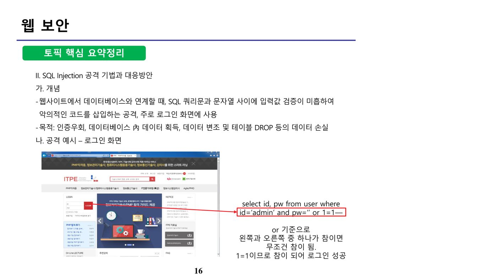

1. 시스템 보안 (원본 p.2-15)
시스템 보안이란 PC나 서버 등 시스템 내의 정보가 유출되지 않도록 접근을 통제하거나 악성코드로부터 시스템을 보호하기 위한 대책이다. 위협 요소는 크게 권한 상승 공격(버퍼 오버플로우, 레이스 컨디션, 포맷 스트링)과 악성코드로 구분된다.
가. 권한 상승 공격
| 공격 기법 | 정의 | 대응방안 |
|---|---|---|
| 버퍼 오버플로우(Buffer Overflow) | 사전에 할당된 버퍼의 크기 이상으로 데이터를 입력해 버퍼를 넘치게 함으로써 리턴 어드레스(Return Address)를 조작하거나 DoS를 유발하는 공격 기법. 힙(Heap) 오버플로우와 스택(Stack) 오버플로우로 구분되며, 오버플로우가 발생하면 데이터가 인접한 메모리 영역까지 침범한다. | 입력 범위를 한정하는 함수 사용, setuid 등 특수권한 파일 지속 관리, 배열의 읽기·쓰기가 범위를 벗어나지 않는지 검사 |
| 레이스 컨디션(Race Condition) | 두 프로세스가 한정된 자원을 서로 차지하기 위해 경쟁하는 상태(경쟁상태)를 이용해, 공격 프로그램이 관리자 권한 프로그램과 경쟁하여 관리자 권한을 획득하는 공격 | 파일 권한 관리, 임시파일 생성 제한 및 링크파일 권한 설정 |
| 포맷 스트링(Format String) | 입출력 함수의 포맷 문자열(예: C언어의 %d, %s 등)을 오용해 메모리 내 정보를 읽거나 쓰거나, 프로세스를 비정상 종료시키는 취약점 | 취약한 함수 사용 제한, 패치(Patch) 적용 |
스택 버퍼 오버플로우 공격은 일반적으로 ① 공격 셸 코드를 버퍼에 저장 → ② 루트 권한으로 실행되는 프로그램의 특정 함수 스택 버퍼를 오버플로우시켜 반환 주소를 공격 셸 코드 버퍼 주소로 변경 → ③ 함수 호출이 완료되면 조작된 반환 주소로 복귀 → ④ 공격 셸 코드가 실행되어 루트 권한을 획득하는 순서로 진행된다.
나. 악성코드
| 유형 | 특징 |
|---|---|
| 바이러스 | 다른 프로그램이나 파일에 기생하여 악의적인 행위를 수행 |
| 웜(Worm) | 바이러스와 달리 다른 프로그램에 기생하지 않고 독립적으로 존재하며 스스로 복제(자기 복제 능력) |
| 트로이 목마(Trojan Horse) | 정상 프로그램으로 위장해 설치된 뒤 악성 행위를 수행(자기 복제 능력은 없음) |
| 트랩도어(Trap Door, Back Door) | 시스템 접근에 대한 정상적인 인증 절차를 우회하여 접근할 수 있도록 미리 설정해 놓은 통로 |
| 논리 폭탄(Logic Bomb) | 특정 시간 또는 특정 조건이 만족되면 시스템의 정상적인 기능을 방해하는 공격을 수행하는 악성코드 |
참고로 IP 주소를 속여 공격하는 세션 하이재킹 관련 기법은 IP 스푸핑이며, 트랩도어와는 구분된다. 시스템의 파일이 악성코드로 무단 변경되었는지 확인하려면 tripwire와 같은 파일 무결성 검증 도구를 사용한다.
2. 웹 보안 (원본 p.15-34)
웹 서비스는 서로 다른 기종의 정보시스템을 통합·연계해 인터넷으로 제공하는 서비스로, 브라우저가 웹 서버에 정보를 요청하면 웹 서버가 웹 페이지(HTML 등)로 응답하는 구조다. OWASP(Open Web Application Security Project)는 웹 보안성 향상을 위한 연구 결과와 도구를 제공하는 비영리 단체로, 최근 3년간 가장 많이 사용된 공격 기법 10가지를 선정해 OWASP Top 10으로 발표한다.
| OWASP Top 10(2013) | 설명 |
|---|---|
| A1 – 인젝션(Injection) | 신뢰할 수 없는 데이터가 명령이나 질의문의 일부로 인터프리터에 보내질 때 발생(대표적으로 SQL Injection) |
| A2 – 인증 및 세션 관리 취약점 | 공격자가 로그인하지 않은 상태로 서비스에 접근하거나 다른 사용자 ID로 가장할 수 있게 하는 취약점 |
| A3 – 크로스사이트스크립팅(XSS) | 사용자 입력값이 검증 없이 웹페이지에 그대로 삽입되어, 공격자가 삽입한 스크립트가 다른 사용자의 브라우저에서 실행되는 취약점 |
| A4 – 취약한 직접 객체 참조 | 개발자가 파일·디렉토리·데이터베이스 키 같은 내부 구현 객체에 대한 참조를 그대로 노출시킬 때 발생 |
| A5 – 보안 설정 오류 | 서버·프레임워크·라이브러리 등의 보안 설정이 안전하게 정의·적용되지 않아 발생 |
| A6 – 민감 데이터 노출 | 개인정보, 인증정보 등 민감한 데이터가 암호화 없이 저장·전송되어 노출 |
| A7 – 기능 수준의 접근 통제 누락 | 기능 단위의 접근 권한 검증이 누락되어 인가되지 않은 기능에 접근 가능 |
| A8 – 크로스사이트요청변조(CSRF) | 로그인 상태의 피해자 브라우저가 세션 쿠키·인증정보를 자동으로 포함해 위조된 HTTP 요청을 강제로 서버에 전송하도록 유도하는 공격 |
| A9 – 알려진 취약점이 있는 컴포넌트 사용 | 보안 패치가 되지 않은 라이브러리·프레임워크 등을 사용해 발생하는 취약점 |
| A10 – 검증되지 않은 리다이렉트 및 포워드 | 사용자를 신뢰할 수 없는 외부 사이트로 우회 이동시키는 취약점 |
가. SQL Injection 공격 기법과 대응방안
SQL Injection은 웹사이트가 데이터베이스와 연계할 때 SQL 쿼리문과 문자열 사이의 입력값 검증이 미흡한 것을 악용해 악의적인 코드를 삽입하는 공격으로, 주로 로그인 화면에 사용된다. 목적은 인증 우회, 데이터베이스 내 데이터 획득, 데이터 변조 및 테이블 DROP 등의 데이터 손실이다.

대응 방안으로는 개발자가 PreparedStatement 객체 등을 이용해 DB에 컴파일된 쿼리문을 전달하는 방식(입력값이 쿼리 구조에 영향을 주지 못하게 함)과, DBA가 관리자 권한을 관리하고 불필요한 프로시저 사용을 제한하는 방식이 있다.
나. Cross Site Scripting(XSS) 공격 기법과 대응방안
XSS는 공격자가 입력 가능한 영역에 태그나 스크립트 언어를 삽입해 클라이언트 측에서 실행되도록 하는 웹 공격 기법이다. 피해 유형은 쿠키·세션정보 유출 → 사용자 도용, 개인정보 유출, 악성코드 유포 및 실행 → 사용자 PC 감염으로 이어지며, 대표 유형은 Stored XSS와 Reflected XSS다.
| 구분 | Stored XSS | Reflected XSS |
|---|---|---|
| 공격 방식 | 공격자가 게시판에 악성 스크립트가 삽입된 글을 작성해두고, 사용자가 해당 글에 접근하는 순간 스크립트가 사용자 PC에서 실행되어 악성코드에 감염되고 쿠키·세션정보가 유출됨 | 공격자가 XSS 취약점이 있는 타사이트에 악성 스크립트를 삽입한 URL을 사용자에게 전송하고, 사용자가 그 URL로 접근하는 순간 사용자 PC에서 악성코드가 실행됨 |
| 저장 여부 | 서버(게시판 등)에 스크립트가 저장되어 지속적으로 위협 | 요청(URL)에 스크립트가 실려 반사되며 저장되지 않음 |
다. CSRF(Cross Site Request Forgery) 공격 기법
CSRF는 사용자가 자신의 의도와 무관하게 자신의 권한으로 공격자가 의도한 행위(예: 스팸글 작성, 자동 댓글, 개인정보 변경)를 하게 되는 공격이다. 예를 들어 공격자가 관리자에게 악성 스크립트가 삽입된 문의글을 작성하거나 메일을 보내면, 관리자가 이를 열람하는 순간 공격자가 의도한 내용(악성코드 유포·피싱 등)의 공지글이 관리자 권한으로 게시판에 게시된다.
라. 대응방안
| 역할(Role) | 설명 |
|---|---|
| 개발자 | 스크립트 실행에 사용되는 특수문자열(<, >, &, ", ', / 등)을 필터링(대체 또는 삭제) |
| 운영자 | 입력값 필터링 정책 수립, 정기적인 보안 취약점 점검, 웹 서버 보안 설정 |
| 사용자 | 주기적인 업데이트, 의심스러운 사이트 및 게시판 글 확인 자제 |
- "세션 쿠키·인증정보를 자동 포함한 위조 HTTP 요청을 강제 전송"은 CSRF의 정의다 — XSS의 정의로 혼동하지 않도록 주의한다.
- 게시판에 악성 스크립트를 삽입하는 것은 XSS의 특징이지 SQL Injection의 특징이 아니다.
- Stacheldraht는 대표적인 DDoS 공격 도구로, 웹 애플리케이션 취약점 공격 기법(SQLi·XSS·쿠키변조 등)과는 성격이 다르다.
- 스니핑(Sniffing, 도청)은 시스템 권한 상승 공격(버퍼 오버플로우·레이스 컨디션·포맷 스트링)과는 성격이 다른 공격이다.
- 웹 쿠키는 클라이언트에 저장되며 그 자체로는 실행 불가능한 데이터이지만, Set-Cookie 헤더에
secure키워드를 지정하면 SSL 등 보안 채널을 통해서만 전송되도록 제한할 수 있다. - 아파치 웹 서버의 클라이언트 접근제어는 IP 주소 등을 기준으로 하며, 포트 번호를 이용한 접근 제어는 네트워크·전송 계층의 역할이라 아파치(응용 계층)의 기본 기능이 아니다.
📚 전체 기출·예상문제 (13문항) — 원문 수록
본 강좌 원본 PDF에 수록된 기출·예상문제를 문항별로 재구성했습니다. 원본에는 한 페이지에 서로 다른 문제가 뒤섞여 추출되어 있던 부분을 분리했으며, 문항별 정답은 원문의 O/X 해설과 대조하여 검증했습니다.